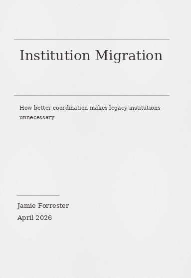
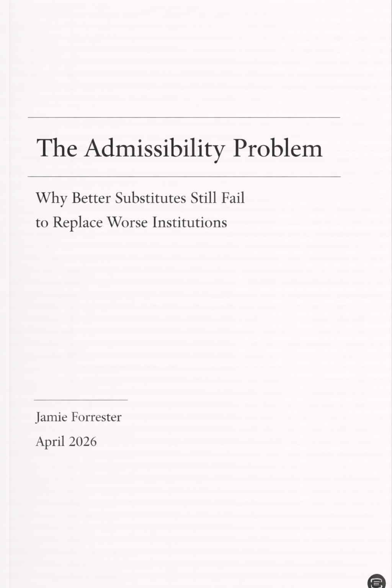
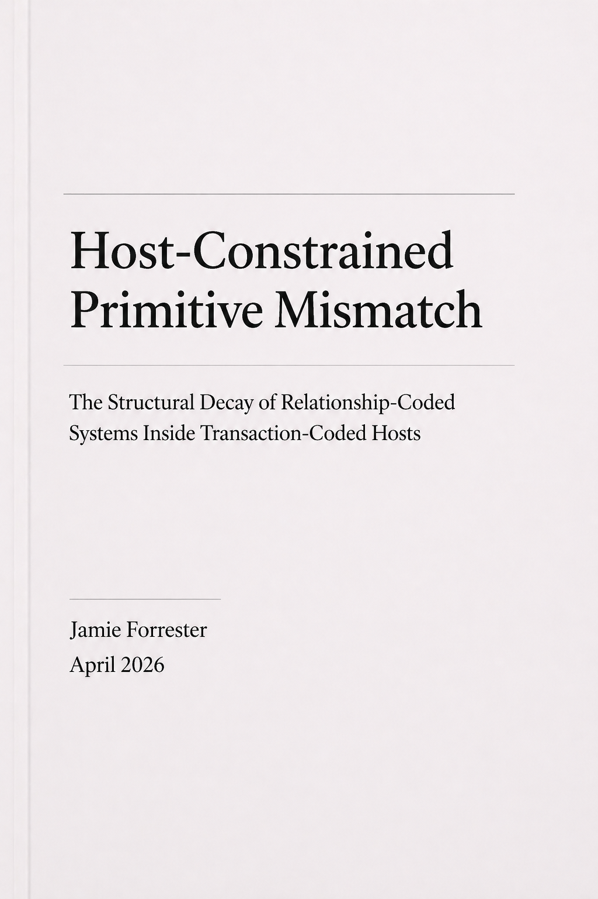
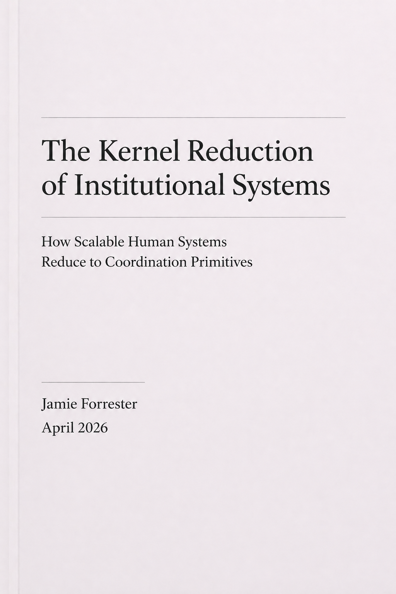
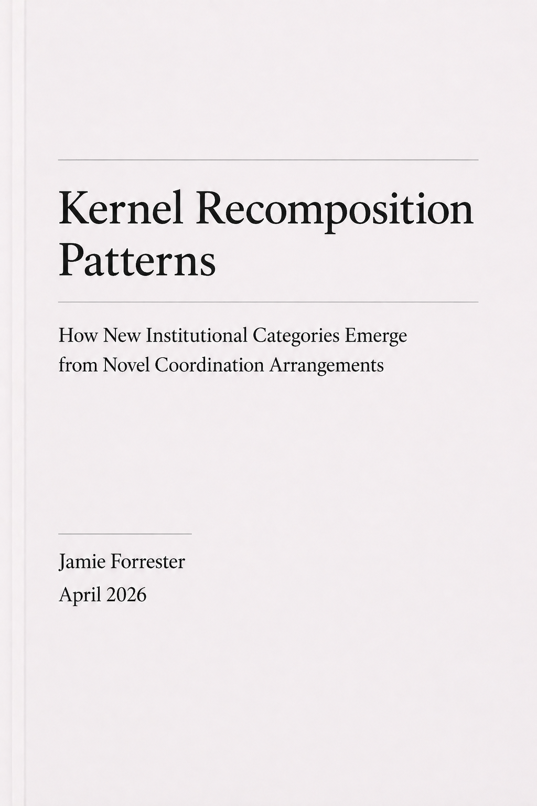

Three papers diagnosing recurring failure across platforms, institutions, and self-correcting systems. Together they move from mismatch between signalled and consumed capability, to collapse through function fusion under consequence, to the missing redesign layer that internal correction loops cannot reliably produce.

The Expertise Illusion in AI Task Marketplaces
How reliability pipelines borrow the language of expertise. Introduces interface-legitimacy mismatch and the Transfer Test: systems that signal one kind of capability while operationally consuming another.

The Four-Function Law of Scalable Institutions
Introduces the Four-Function Law: institutions fail under scale when sensing, interpretation, authority, and memory remain fused in the same human node at the point of consequence.

Why Systems Can't Fix Themselves: The Missing Redesign Layer
Introduces the Redesign Law and correction collapse. Distinguishes execution, diagnosis, and redesign, and shows why the first two cannot reliably produce the third from within the same correction loops.
The trilogy closes the diagnostic loop. A second public sequence begins where it stops: how legacy institutions lose centrality, how substitutes are built, and what makes them admissible.
The Outlier AI and NHS Primary Care artifact families are the applied proof of Papers 01–03. See the public proof sets →
Papers 4–6 extend the trilogy into migration, replacement method, and admissibility — the conditions under which a better system becomes historically real.

Institution Migration
Introduces the Migration Law and the burden transfer mechanism. Institutions lose centrality not when exposed, but when the hidden work required to keep them usable can finally be carried elsewhere.
The Institutional Replacement Pipeline
Turns diagnosis into a buildable replacement method. Introduces the five-stage replacement pipeline and the truth kernel as the primitive a substitute must protect. From recurring structural failure to buildable substitute form.

The Admissibility Problem
Names the missing threshold between buildable substitute and institutional reality. Introduces the Admissibility Law, the recognition gap, and the conditions under which a better substitute can safely carry consequence. Why better substitutes still fail to replace worse institutions.
Two papers that operate above and around the replacement arc. Paper 07 names the structural correction sequence that high-consequence frameworks independently evolve — and the frame-level gate every existing instantiation fails to complete. Paper 08 names a new failure class: what happens when a platform's native economic primitive cannot survive its host interface.
The Governed Correction Sequence
Names the structural sequence that correction frameworks in high-consequence domains independently evolve — and identifies the frame-level gate every existing instantiation fails to complete.
Papers 1–6 diagnosed failure and specified the construction path. Paper 7 makes explicit the sequence beneath them — and the structural stopping point every existing instantiation reaches.

Host-Constrained Primitive Mismatch
The structural decay of relationship-coded systems inside transaction-coded hosts
Introduces the Hostage Platform Law, Representational Loss, the Trust Tax Corollary, and the Platform Decay Spectrum. Proves the failure class through Patreon/Apple, with lower-resolution checks across Spotify, Kindle, and Epic Games. Provides the Host Constraint Test and a four-exit redesign model.
The Correction and Constraint Layer names the sequence beneath the first six papers and the external force that rewrites a platform's economic primitive. The Kernel Layer follows — the coordination substrate beneath all of it. Read the Kernel Layer →
The culminating two papers of the series. Paper 09 reduces the failure classes diagnosed across Papers 1–8 to a finite set of irreducible coordination kernels — proving the series has been approaching the same underlying structure from different failure surfaces. Paper 10 turns that reduction into a generative method: if systems are kernel arrangements, new institutional categories can be designed by deliberate recomposition.

The Kernel Reduction of Institutional Systems
Introduces the Kernel Reduction Law: scalable human systems reduce to finite coordination kernels
Names seven candidate kernels derived from Papers 1–8. Shows that the failures diagnosed across the prior series — mismatch, collapse, missing redesign, burden transfer, admissibility failure, correction stall, host compression — are all expressions of kernel misplacement. Provides the Kernel Reduction Test as the diagnostic instrument.

Kernel Recomposition Patterns
Turns the kernel reduction into a generative method
Introduces the Recomposition Law: new institutional categories emerge when kernel arrangements are changed in allocation, priority, sequence, or admissibility such that a burden the legacy arrangement exported becomes structurally avoidable. Provides five recomposition patterns, a composition matrix, and the Recomposition Test.
Paper 09 is the reduction layer. Paper 10 is the generative layer. Together they are the culmination of the series — not more papers, but the substrate beneath all prior papers revealed.
The eleven papers now form a complete public sequence — from the first mismatch at the interface, through collapse, replacement, correction, kernel recomposition, and the complete classification standard. Start at the failure pattern closest to your current problem, or start with Paper 01 →
The classification standard that makes the entire series interoperable. Nine failure classes, fifty-four sub-types, with formal inclusion and exclusion criteria, false positive tests, refusal conditions, and corrective directions for each. Paper 11 is the pivot paper — it does not add to the prior ten papers, it gives them a shared grammar.
The taxonomy does three things the prior papers could not do individually. It names each failure class precisely. It gives each class formal inclusion and exclusion criteria so the diagnosis can be refused when it doesn't hold. And it makes the classes interoperable — a compound failure can be assigned a primary class and secondary classes, with the primary class governing the correction sequence.
Papers 12–59 are the anchor papers for the sub-types this taxonomy names. Each will go deeper into one class or sub-type. Paper 11 stays as the reference point for the entire classification system.
Papers 12–59 are planned. They are the anchor papers for the sub-types the taxonomy names. Each will anchor one class or cross-cutting pattern with full criteria, examples, and corrective direction. Paper 11 is the constitutional reference. The anchor papers deepen it. View the full taxonomy →
These models are not parallel to the papers. They are the reusable structural instruments beneath them: three foundational models used across every engagement.
First-pass structural orientation protocol
Purpose → Primitive → Rules → Failure
Four questions that surface the structural reality of any system before analysis begins: what the system is actually for, what action it repeats, what rules govern that action, and what happens when those rules fail. The scan works because most system confusion comes from not being able to name these four things simultaneously. Once named, the structural problem — if there is one — becomes visible without a full diagnostic engagement. Used as a first-pass fit check before briefing.
How systems generate valid outputs
Primitive → Law → Sequence → Gates → Output
A five-stage structural grammar for inspecting how a system produces outputs. The primitive names the smallest repeatable unit of real work. The law names what must hold for that work to be valid. The sequence defines the order of production steps. Gates are the explicit checks that refuse promotion when output fails. The output is what the system delivers once all gates pass.
It works forward as a production model and backward as a diagnostic: bad output is traced through gates, sequence, law, and primitive to locate the real break. The Grammar Kernel is the structural spine PromptFactory runs on, and the production architecture behind the Diagnostic Artifact and the four-artifact Full Structural Engagement. The ten papers are now being compiled into a machine-usable canon to power governed production of Translation, Diagnostic, Redesign Executive Summary, and Full Redesign artifacts.
How a primitive becomes a civilisation layer
Purpose → Primitive → Medium → OS → Marketplace → Category → Civilization → Meta
Failure is almost always a mismatch between the layer a system is operating at and the layer it believes it is at. A product trying to behave like a marketplace, or an OS trying to behave like a product, will fail structurally regardless of execution quality. Used in diagnosis to locate the true operating layer before redesign begins.
An eight-stage model that tracks how any durable system scales from a single repeated action into a civilisation-level layer. Each stage is defined by what the system has to become to survive at that level of coordination demand.
The equation generates a universal developmental ladder from primitive emergence through form, system, institution, civilisation, and meta-structure. It works bidirectionally: forward as a generative system, backward as a diagnostic instrument. This is the deepest theoretical layer beneath the papers, the books, and the builds — the framework from which the Grammar Kernel, the Universal Formula, and the Seven Revolutions are all derived.
The five-book sequence — Seeing Systems, The 15-Level Abstraction Ladder, and three more — is the teachable form of the same structural laws. Books 01 and 02 are drafted.
VIEW BOOKS →The practice is not purely advisory. These are live proving grounds built under the same structural logic: law-first design, explicit rules, constrained ownership, and failure-resistant build paths. They are included here because real structural diagnosis must survive contact with actual construction. A diagnostic lens that is never tested in live systems eventually becomes literary. You cannot correctly diagnose what you have never had to build.
The two builds operate at different levels of the same structural logic. Spectrum Registry proves law-first construction in a constrained ownership domain. PromptFactory proves that build logic itself can be moved upstream into specification, verification, and governed execution.
PromptFactory and the artifact-production method are different instantiations of the same underlying production architecture: both run on the Grammar Kernel, both treat upstream specification as the primary quality gate, and both refuse to promote output that has not passed explicit structural checks. One produces software. The other produces structural artifacts. The production logic is the same.

Spectrum Registry
In developmentlaw-first registry proving ground
A law-first symbolic registry built for durable truth and constrained ownership. The system starts at the primitive: what counts as a valid unit, what may be claimed, what must be refused, and how ownership remains bounded by rule rather than drift or convention.
It is a live test of how truth, authority, custody, and enforcement behave when the system is designed from law outward rather than from interface inward. The structural decisions made during this build directly inform how boundaries, admissibility, and enforcement are handled across the Diagnostic Artifact and Full Redesign Artifact. Spectrum Registry matters here as a bounded proof that invariant-first design can survive translation into a working system under real build constraints, as described in Paper 05.

PromptFactory
In developmentlaw-first build system proving ground
A deterministic build architecture that moves software production upstream into law, specification, and verification. Rather than treating code generation as the centre of the system, PromptFactory treats generation as one constrained stage inside a larger build grammar: primitive, law, sequence, gates, output.
Its purpose is to reduce build drift by resolving ambiguity before execution and by refusing promotion when outputs fail explicit checks. It matters here not as a product announcement, but as applied proof: a test of whether the same structural preferences visible in the public research — legibility, bounded ownership, explicit rules, and redesign before repetition — can be made operational inside software construction itself.
The Grammar Kernel — primitive → law → sequence → gates → output — is the structural spine the build runs on. This build is the live proving ground for the manufacturing layer described in Paper 05. It operationalises the claim that quality is set upstream before execution begins.